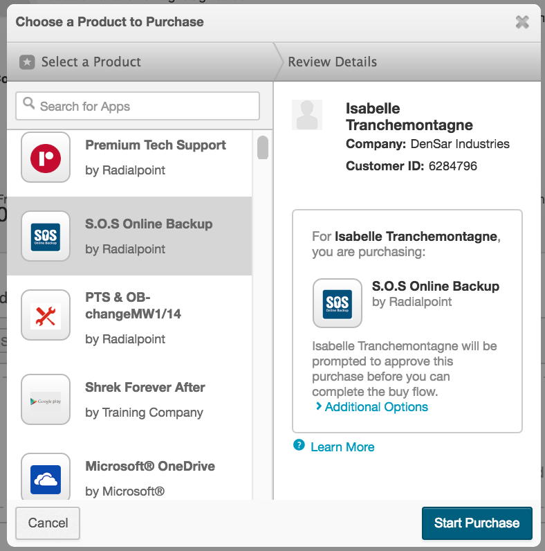
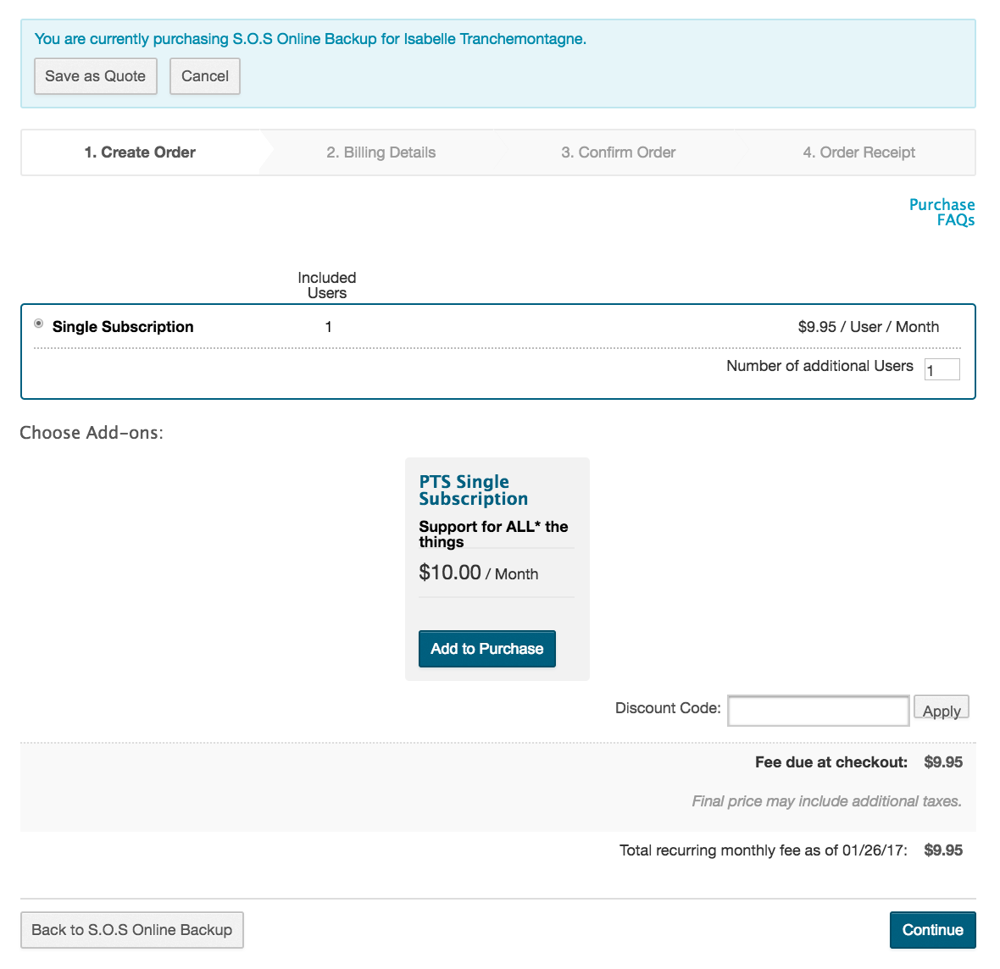
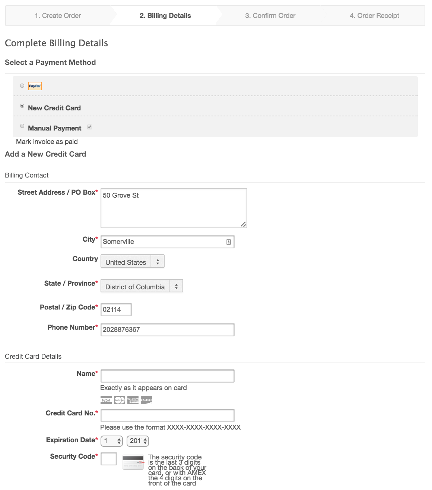
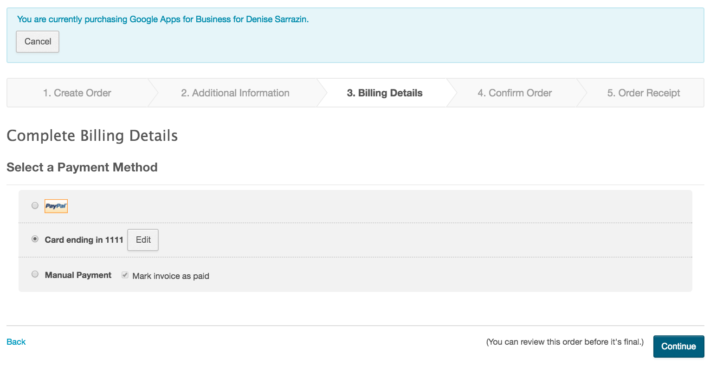

In most cases, individual end users do not purchase their own products. Instead, products are purchased on their behalf by individuals with one of the following roles: Sales Support, Reseller, or Marketplace Manager.
The following procedure explains how Marketplace Managers can purchase products on behalf of users.
To purchase products on behalf of a user
Go to Manage > Marketplace> Dashboard > Home | Users. The Users page opens.
Click the user for whom you want to purchase a product. The user's details page opens.
Click Make Purchase. The Choose a Product to Purchase dialog box appears.
In the left pane, click the application you want to purchase on behalf of the user. It appears on the right side.

(placeholder for image)
(Optional) If you have already discussed the purchase with the user and received his or her approval, click Additional Options to expand the dialog box, and select the checkbox under the Already Received Approval heading.
When you indicate that a purchase has been pre-approved by the user, you can complete the purchase without the need for approval by the user, and the order completion and confirmation process are slightly different. Those differences are outlined in steps 10 and 11, below.
Click Start Purchase. A purchase confirmation page opens, on which you can select options or add-ons.
(Optional) Choose purchase options and add-ons. Depending on the product, options can include changing the number of users, modifying the price, changing from a free trial to a purchased version of the product (or the reverse), and applying a discount code.

Click Continue. The Complete Billing Details page opens.
Select one of the following payment methods:
When you select a payment method, corresponding billing information fields become visible, which you must fill out in order to proceed with the purchase.
The following example demonstrates a payment with a credit card when a user is making a purchase with this payment method for the first time.
When you select a payment method, corresponding billing information fields become visible, which you must fill out in order to proceed with the purchase.
The following example demonstrates a payment with a credit card when a user is making a purchase with this payment method for the first time.

If the user has previously purchased a product, the Complete Billing Details page resembles the following example, with the previously used payment method automatically selected. If there is no change in billing details, it is not necessary to re-enter all of the information outlined above. However, if the user wants to use a different credit card than one previously used, he or she must update the credit card information from within his or her own account.

Click Continue. The purchase confirmation page opens. It contains order details such as product name, price, and so on. The appearance of the page and the next step in the purchase process are different depending on whether or not the purchase was pre-approved (see step 5).